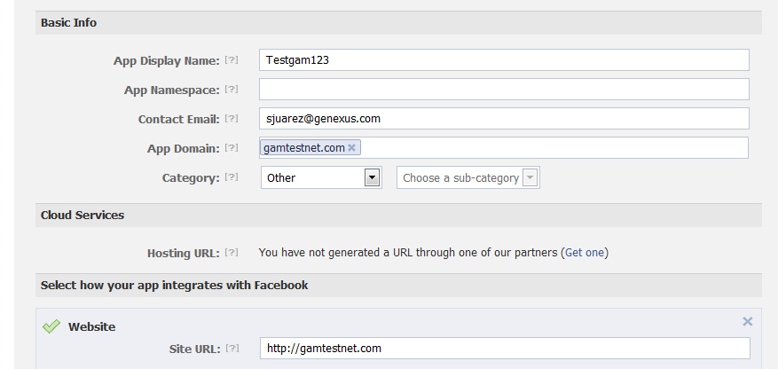
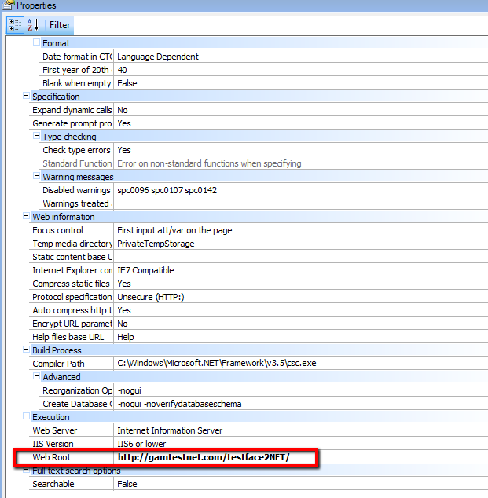
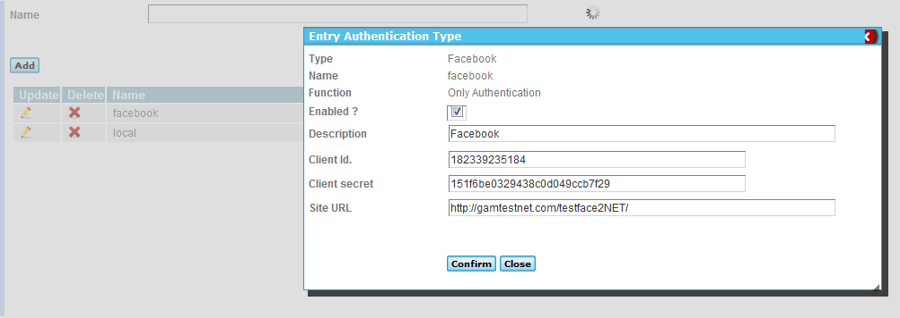

How to test Facebook Authentication Type/ GAM Twitter Authentication Type for NET WEB applications, taking into account the considerations explained in Prototyping applications with Facebook or Twitter Authentication. In order to test Facebook or Twitter authentication, the URL of the application should not be "localhost" and shouldn´t have reference to the port (for example, http://localhost:8080 is not a valid URL, neither http://localhost, nor http://server:8080). I. Recommendation: Use the cloud for prototyping : apps3.genexusx.comII. If you want to test locallyYou need to make some changes in hosts file of the PC. 1. Edit hosts file (C:\Windows\System32\drivers\etc) Add the following line: 127.0.0.1 gamtestnet.com 2. Define facebook application in Facebook site (http://developers.facebook.com/):  Figure 1.When a user logs in the GeneXus application using Facebook (clicks on the Facebook button of the GAMExampleLogin web object), GAM redirects to Facebook site where the user has to enter his credentials. After this step, Facebook redirects to a URL where GAM does some checks and redirects again to the application. The site URL specified in the definition of the Facebook application (in Facebook web site, figure 1) is the base URL where Facebook will return after the user has logged in (GAM application is going to be found at this location). Facebook determines that this URL has to be the same as the base URL of the application which made the call to Facebook. So, note that the site URL (Figure 1) is the same es the web root defined in GeneXus model (Figure 2):  Figure 2.3. Define facebook application in GAM Backend as the following (after you have obtained the Client Id and Client Secret provided by Facebook in the previous step):  Figure 3Note that here you need to specify the complete URL including the web application name. See AlsoTesting Facebook / Twitter authentication for SD applications using Android Emulator
|
| Backlinks | |
| Prototyping applications with Facebook or Twitter Authentication locally | Testing Facebook / Twitter authentication for SD applications using Android Emulator |